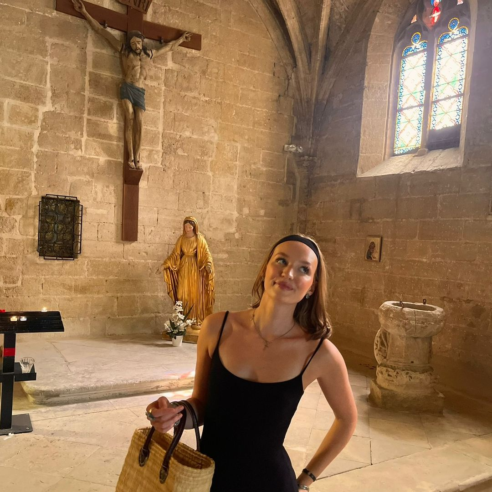

Internationaal
Internationale kanalen
Breaking In The Habit
Toegankelijke en persoonlijke uitleg van het katholieke geloof door een franciscaan.
The Counsel of Trent
Apologetisch kanaal met scherpe inzichten over geloof en cultuur.
Ascension Presents
Bekend kanaal dat de schoonheid van het katholieke geloof uitlegt.
Pax Tube
Kanaal met sterke, vaak provocerende video’s over katholieke geschiedenis, cultuur en maatschappij, met een uitgesproken en soms controversiële invalshoek.
The Fuel Project
Christelijk kanaal dat inspireert tot een leven met Jezus.
Vlaams
Vlaamse kanalen
Pastoor Bart
Priester die via korte video's geloof en levensvragen toegankelijk maakt voor jongeren.

Mevrouw Magali
Enthousiaste en toegankelijke content rond catechese en geloof voor jongeren.
Priester Wim
Rustige en heldere duiding van katholieke thema's met focus op verdieping.
Andy Penne
Persoonlijke en inspirerende geloofsreflecties en getuigenissen.